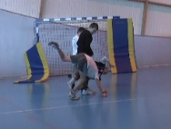
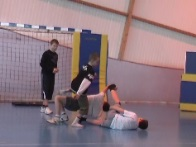
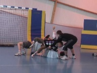
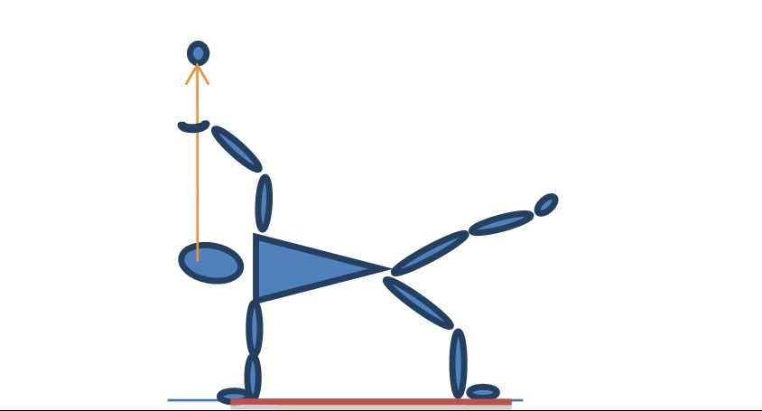

Introduction
Concevoir et mettre en oeuvre un processus d’enseignement-apprentissage dans les activités physiques artistiques représente de réelles difficultés pour certains professeurs d’EPS (Coasne, 2013). Les questions posées sont nombreuses à l’abord d’un cycle d’activités artistiques : quels objets d’enseignement choisir ? Quelles contraintes fixer ? Comment amener les élèves à une activité de créations artistiques ? Comment intervenir pour les aider à créer par eux-mêmes ? A quelles sources artistiques se référer parmi toutes les orientations possibles ?
Devant la nécessité d’organiser un parcours de formation en activités artistiques (Programmes d’EPS, 2008), nous constatons qu’un bon nombre de professeurs enseigne plutôt le cirque que la danse. Ainsi notre étude menée dans l’Académie Nord - Pas-de-Calais (Coasne, 2013) montre que le cirque se place au 10ème rang de la programmation d’APSA en EPS, devant la danse située au 13ème rang. Par ailleurs, les professeurs qui enseignent le cirque au collège tendent à retenir la dimension sportive de l’activité (engagement physique, prise de risque, techniques acrobatiques proches de la gymnastique). Une enquête réalisée par les inspecteurs d'académie-inspecteurs pédagogiques régionaux d’EPS auprès des enseignants de la même académie confirme cette tendance (IEN, 2009) : l’initiation au cirque est abordée selon une approche moins artistique que sportive à travers les techniques de jonglerie, d’équilibre et d’acrosport présentées de façon juxtaposée dans un numéro (Coasne, 2013). Cette orientation apparaît forte (Vigneron, 2012), malgré le rangement de cette activité, au même titre que la danse, au sein du groupement artistique "Compétence propre 3 : réaliser une prestation corporelle à visée artistique ou acrobatique (MEN, 2008)". L’enjeu de notre recherche est de penser, en articulant une analyse anthropologique et une analyse didactique, la dimension "artistique" des savoirs circassiens pour les tester dans un cycle d’enseignement de l’EPS en 5ème. L’article vise à décrire les conditions d’un engagement actif des élèves dans le processus artistique tel que défini dans le cirque contemporain (ce que nous décrivons plus loin). Pour illustrer certaines conditions de cet engagement, à savoir les propriétés didactiques du milieu (Brousseau, 1998) et les postures de l’enseignant dans sa conduite de classe, nous étudions le cas d’une situation didactique significative des résultats de la recherche.
Notre questionnement prend place dans une recherche d’ingénierie didactique en classe de 5ème. Elle s’attache à développer une démarche de création en cirque, susceptible de favoriser l’activité artistique des élèves par la construction d’un milieu suffisamment ouvert pour permettre l’hétérogénéité créative des réponses. Si le milieu doit favoriser une activité autonome et authentique qui rend la prestation singulière car personnelle, cela présuppose aussi que l’enseignant ait une attitude en réticence dans le contrat didactique (Sensevy, 2007).
Nous exposons le cadre théorique et méthodologique dans un premier temps puis analysons la posture de l’enseignant et les propriétés didactiques d’une situation significative de l’avancée de l’ingénierie mise en place.
1. Cadre théorique
1.1. Une recherche coopérative enseignant/chercheur
Notre recherche d’ingénierie didactique est qualifiée de coopérative (Gruson, Forest, Lefeuvre, Sensevy, Loquet & Go, 2013) et engage côte à côte, selon un principe de symétrie, chercheur et enseignant. Le mode de fonctionnement coopératif (dont certains prototypes sont décrits par Sensevy, 2011) n’est pas pensé de manière hiérarchisée, descendante et tranchée (au chercheur la conception théorique et à l’enseignant, la conception pratique) mais s’appuie sur une relation étroite entre chercheur et enseignant. Ainsi le terme coopération réfère à la volonté de travail commun et de responsabilité partagée dans chacune des étapes de l’ingénierie. Nous énonçons les dix étapes qui constituent le dispositif du travail collectif professeur/chercheur : 1) se mettre d’accord sur la nature du savoir circassien devant être enseigné mais aussi sur les capacités épistémiques correspondantes attendues des élèves (proposition et discussion d’hypothèses) ; 2) préparer les séances à partir d’une proposition préalable du professeur (vigilance commune sur les variables qui seront manipulées lors de l’expérience) ; 3) stabiliser la mise en oeuvre de la séance 1 (déroulement, matériels utilisés, séquences et modalités de travail) sous forme d’un document écrit ; 4) déterminer a priori des "façons d’opérer" avant la mise en oeuvre de la séance par le professeur ; 5) mettre en oeuvre la séance (le professeur) et observer en direct (le chercheur) les incidences des variables et régulations introduites par le professeur sur les apprentissages (la séance étant intégralement filmée) ; 6) analyser la séance réalisée par le professeur avec ses élèves (réaction à chaud du professeur suite à la séance qu’il a conduite, puis analyse complétée par un échange professeur/chercheur en s’appuyant sur la vidéo et les éléments de transcription) ; 7) déterminer a posteriori les "façons effectives d’opérer" du professeur lors de la séance passée ; 8) dégager des pistes d’évolution de la mise en oeuvre de la séance 1 ; 9) envisager une "reprise" de la séance pour améliorer l’efficacité supposée du dispositif et les progrès des élèves lors des transactions de savoirs (au sein du collectif classe et des travaux de groupes) en séance 2 ; 10) préparer la séance 2, selon les principes coopératifs des étapes précédentes, stabiliser en commun la proposition de mise en oeuvre de la séance 2, etc. Les échanges (mails et documents) entre chercheur et enseignant sont permanents et permettent ainsi d’accorder les attentes réciproques. Le pronom "nous" utilisé maintenant dans le texte sera là pour désigner le fait que les énoncés sont formulés et décisions prises en commun par la paire chercheur-enseignant. Dans les autres cas, nous préciserons les termes de professeur (P.) ou chercheur.
1.2. La théorie de l’action conjointe en didactique
Nous mobilisons la théorie de l’action conjointe en didactique (TACD), (Sensevy & Mercier, 2007 ; Sensevy, 2008, 2011) travaillée par Loquet et Roesslé (2012) dans les activités physiques sportives et artistiques (APSA). Pour ces auteurs, l’action didactique est vue comme une action conjointe du professeur et de l’élève, plus précisément comme un réseau de transactions entre ces deux instances, dont l’objet est le savoir (au sens anthropologique). Avec le terme de transaction, nous insistons sur une vision de l’agir humain en tant que trans-agir (et non agir individuel) signifiant, selon l’étymologie, agir à travers (trans) autrui et à travers l’environnement. Par ailleurs, la TACD modélise l’activité des élèves et du professeur in situ sous la forme de jeu et distingue le jeu d’apprentissage et le jeu épistémique.
1.2.1. Le jeu d’apprentissage
Le professeur (P.) et l’élève (é) sont vus comme deux joueurs qui s’engagent conjointement dans un jeu dont l’objet est l’acquisition de savoirs (S) et leur mise en pratique. "L’action didactique est une action conjointe, c’est-à-dire coopérative et coordonnée" (Sensevy, 2008, p. 43). Le jeu d’apprentissage est par essence un jeu coopératif entre professeur et élève (le jeu de l’un influence celui de l’autre, et réciproquement) qu’il est possible de décrire avec les notions de milieu et contrat associées à un enjeu de savoir déterminé (Sensevy, 2011, p. 136). Nous décrivons les jeux d’apprentissage en classe à l’aide de deux ensembles de notions complémentaires : le couple milieu / contrat et le triplet mésogenèse / chronogenèse / topogenèse. Ce second ensemble lié au premier tente de saisir au plus près la dynamique d’élaboration des savoirs (d’où la présence du suffixe genèse) au sein des transactions didactiques. Nous déplions les deux ensembles de notions ci-dessous:
Le couple milieu / contrat
La TACD s’appuie sur la théorie des situations didactiques (Brousseau, 1998), dont la clef de voûte est le concept de milieu. En situation scolaire l'enseignant organise un milieu qui offre suffisamment de résistance pour que l'élève ne puisse répondre aux problèmes posés que par adaptations successives. Au cours de ces adaptations successives, apparaissent des erreurs. Brousseau accorde à l’erreur un statut fondamental, en mettant en évidence que l’enfant apprend lorsque que la structure d’accueil (à la base du processus d’assimilation) n’est plus adaptée et qu’apparaît la nécessité de transformer cette structure (processus d’accommodation)1. Pour notre recherche, décrire ce qui se passe en classe consiste à reconnaître ce qui fait résistance dans le milieu proposé. Notre ingénierie didactique questionne la pertinence du milieu proposé, en mesurant les incidences des structures antagonistes sur les apprentissages.
Le milieu didactique (Brousseau, 1998) auquel sont confrontés les élèves, comporte des éléments que nous avons choisis pour leur épaisseur culturelle. Le choix commun a été fait de conduire les élèves vers une activité artistique en réponse à un problème circassien du genre contemporain : interpréter en acteur un numéro supposant la maîtrise de savoirfaire techniques et risqués. Ce choix est orienté par ce qui est reconnu comme le sens de l’activité experte.
Notre étude s’intéresse aux savoirs circassiens et suit ici, les avancées du groupe de Valentin observé lors d’une situation appelée "la machine à jongler complexe". Il nous apparaît, au fil du travail d’ingénierie, que spécifier le milieu dans lequel évoluent les élèves, suppose également de décrire les liens entre ce milieu et le contrat didactique.
Le contrat didactique "précise les positions réciproques des participants au sujet de la tâche et précise la signification profonde de l’action en cours, de la formulation ou des explications fournies" (Sensevy, 2007, 18). Sensevy rappelle le principe de "dévolution" (mis en évidence par Brousseau, 1998) comme condition d’une appropriation active du savoir par l’élève agissant de son propre mouvement (proprio motu). Ceci suppose une "certaine réserve de celui qui sait" observé par le professeur au sein du contrat didactique. Ce principe dit de réticence didactique (Sensevy & Quilio, 2002) consiste pour le professeur à passer sous silence certaines des choses qu’il veut enseigner, et à engager les élèves dans des rapports au milieu qui leur permettront de passer outre ce silence et d’agir par eux-mêmes. Il s’agit alors, de décrire le travail du professeur entre expression et réticence (Sensevy, 2011) : les énoncés du professeur (expression) et la retenue de certaines informations (réticence). Nous souhaitons évaluer à la fois la portée du milieu proposé et le jeu du professeur entre réticence et expression, sur le jeu créatif des élèves. C’est en termes de dialectique que la relation réticence / expression sera analysée, ces deux composantes inséparables du travail professoral apparaissent en effet contradictoires : trop d’expression du professeur peut tarir le travail de l’élève, trop de réticence peut ne pas le nourrir.
Le triplet mésogenèse / chronogenèse / topogenèse
Le processus mésogénétique (du latin mésos, milieu) pose la question du "quoi ?". La mésogenèse décrit la construction du milieu, ou de la succession des milieux, dans la classe. Le processus chronogénétique (du latin chronos, temps) pose la question du "quand ?". La chronogenèse décrit l’avancée du savoir dans le temps des situations de classe. Le processus topogénétique (du latin topos, lieu) pose la question du "qui ?". La topogénèse incite à identifier le partage des responsabilités épistémiques entre les transactants. Ceux-ci peuvent revêtir, au fil des jeux d’apprentissage, des positions topogénétiques plus ou moins hautes, en fonction de leur participation, plus ou moins dense, à l’avancée du savoir dans le collectif.
Lors des jeux d’apprentissage, les élèves sont confrontés, plus ou moins explicitement, à certains usages des savoirs. Ces usages constituent ainsi une cible, plus ou moins lointaine, de l’action didactique que nous décrivons avec la notion de jeu épistémique "source" (Sensevy, 2011, p.126)
1.2.2. Le Jeu épistémique source
Le jeu épistémique dit source correspond, dans le langage de la TACD, à la modélisation d’une pratique savante (au sens de ceux qui savent) en dehors des situations didactiques scolaires. Pour décrire le jeu épistémique source, il s’agit d’identifier et comprendre ce qui dans l’activité menée par les experts a permis l’élaboration des éléments de savoir. Il nous faut élucider ici le jeu circassien de l’artiste professionnel lorsqu’il crée un spectacle, afin d’en extraire les savoirs susceptibles de devenir une cible des jeux d’apprentissage.
Le jeu circassien source
L’analyse anthropologique des pratiques circassiennes (Coasne, 2013 ; Salarémo, 2009) montre le caractère culturel hybride et ouvert du cirque dans sa forme moderne (en distinction avec sa forme antique), enrichi dès son apparition (fin du ), par le métissage avec d’autres pratiques qu’elles soient militaires, gymniques ou théâtrales. Le cirque leur a emprunté des techniques, des règles, des conventions. Le point d’unité de ces emprunts est celui de l’engagement physique avec pour corollaire, la "prise de risque" physique et/ou esthétique (Goudard, 2004 ; Wallon, 2002), dans une relation contraignante avec les objets "sans lesquels il perdrait sa spécificité agissante" (Lachaud, 2001, p.130). Si le cirque puise sa raison artistique dans une prise de risque, à la fois esthétique et physique, elle diffère en fonction des deux genres, classique et contemporain, qui le composent aujourd’hui:
- 1) pour le cirque classique, l’artistique se situe au coeur de la maîtrise des exploits techniques réalisés "pour la beauté du geste". Les numéros techniques se succèdent sans lien narratif ou argumentaire entre eux. Le jeu épistémique de l’artiste du cirque classique recherche l’exploit à la manière du sportif : toujours plus haut, plus fort, plus adroit "la recherche de la virtuosité est poussée à son paroxysme" (Sizorm, 2010, p. 80). Le numéro trouve son sens dans une charge instrumentale élevée : il s’agit par exemple de jongler avec un maximum d’objets ou de réaliser des pyramides acrobatiques impressionnantes par leur hauteur. Dans cette perspective, le circassien classique cherche à éblouir en éradiquant la chute considérée comme faute. "La vie, la mort, la condition humaine, l’exposition au danger sont le propos de la prouesse, ce sur quoi sont fondés le numéro, l’exploit à l’ancienne" (Quentin, 2006, p.12).
- 2) Pour le cirque contemporain, venu du théâtre sorti dans la rue dans les années 70, l’artistique dénote un propos poétique, littéraire ou social. La charge sémiotique du numéro pilote le projet : le jeu épistémique des artistes contemporains puise son sens dans la réalisation de différents tableaux acrobatiques, jonglistiques et autres pour servir le propos, fil conducteur du spectacle. L’exploit n’est pas systématiquement recherché, les techniques sont des moyens "d’exploration d’une humanité ordinaire mais singulière" (Sizorm, 2010, p.80). Les registres émotionnels sollicités sont alors plus diffus, l’artiste n’hésite pas à évoquer sa fragilité. Ainsi la chute (corporelle ou manipulatoire) toujours possible peut devenir prétexte à improvisation et création (Guy, 2001 ; Lachaud, 2001). Pour bâtir l’ingénierie, nous retenons le jeu artistique défini dans le cirque contemporain, car il place l’élève circassien devant certaines contradictions : adopter un jeu d’acteur tout en faisant difficile et risqué, jouer à être un "autre" (personnage, machine, etc.) tout en maîtrisant par exemple, une figure jonglistique et/ou acrobatique.
2. Cadre méthodologique
Avant d’exposer nos choix méthodologiques, nous présentons brièvement le contexte empirique de la recherche.
La classe de cinquième est composée de vingt et un élèves (onze garçons et dix filles) et n’a jamais vécu de cycle de cirque. L’enseignant d’EPS engage la classe dans un travail par sous-groupes (quatre à cinq) dont la composition est libre. Il propose "mécanique" comme thème inducteur à la création.
Le professeur, d’une trentaine d’années, travaille depuis quinze ans dans ce collège classé en Réseau d’Education Prioritaire. Il est reconnu comme un enseignant très investi dans sa discipline et son établissement. Identifié dans l’académie comme expert de l’activité, il anime des stages de formation en Arts du cirque auprès des enseignants d’EPS.
Nos choix méthodologiques reposent sur les transcriptions des corpus vidéo de l’ensemble des séances et sur des entretiens complémentaires.
2.1. Le film d’étude - les entretiens
Pour rendre compte des transactions à la fois corporelles et verbales qui se déroulent dans la classe, chaque leçon d’une heure trente du cycle d’enseignement de neuf leçons est vidéoscopée. Les films d’étude permettent d’organiser l’analyse des données audio et vidéo dans une "dialectique de l’analogique et du digital, c’est-à-dire de la dépiction (le compte rendu d’une réalité par l’image) et de la description (le compte rendu d’une réalité par le texte.)" (Sensevy, 2011, p. 219). Certains passages d’enregistrements vidéo jugés riches en interactions verbales et corporelles, et significatifs du savoir en construction sont transcrits avec le logiciel Live Movie Maker, en vignettes iconographiques accompagnées d’un texte décrivant l’action et le discours des acteurs en jeu.
Un entretien post cycle avec l’enseignant est mené à partir du visionnage de certaines séquences choisies par le chercheur. Cet entretien visant à recueillir les intentions et les impressions de l’enseignant constitue une source d’informations complémentaires pour comprendre certains choix et tâtonnements du professeur.
Notre recherche s’appuie sur plusieurs grains d’analyse autour de trois niveaux articulés d’échelle : le niveau macroscopique concerne des descriptions sur la durée du cycle d’enseignement ; le niveau microscopique représente le grain le plus fin d’analyse s’attachant à l’analyse d’un évènement didactique de la leçon sur des durées qui peuvent, dans certains cas, être de l’ordre de la seconde ; le niveau mésoscopique s’articule aux deux autres niveaux et correspond au temps didactique de la leçon. Nous exposons maintenant ces trois niveaux d’échelle dans lesquels s’inscrit l’analyse de la leçon 3.
2.2. Les trois niveaux d’échelle
2.2.1. Le niveau macroscopique : le cycle d’enseignement
Le contexte spatial
Les leçons du cycle se sont déroulées dans un demi-gymnase partagé avec une autre classe qui pratique le volley-ball. La classe évolue dans un espace délimité par : 1) des cloisons amovibles qui séparent les deux classes, 2) des coulisses grâce à des demitables de tennis de table renversées qui délimitent ainsi une scène centrale, 3) une rangée de tapis qui borde la scène où s’assoie le public, 4) un tableau face à des bancs où s’installent les élèves lors des explications du professeur.
L’espace scénique
A la complexité d’orienter la création à "l’ouvert de la piste" à 360°, nous choisissons l’en-face de la scène qui permet aux élèves de concentrer leur efforts sur une seule orientation des spectateurs. En effet, l’ouvert de la piste rend complexe la création : "la folie du voir panoptique fait du cirque une arène globale. Rien ne peut échapper à la vision. (…) Le 360° oblige à se mouvoir de manière cubiste, à savoir que de chaque angle de vue il doit être possible d’observer la même chose." (Ciret, 1999, p.127).
Le professeur choisit de clôturer par des demi-tables de tennis de table, l’espace de travail. Il explique ainsi son choix (échanges post leçon 1) : il s’agit de délimiter un espace qui soit à la fois théâtral significatif de celui qu’investissent certaines troupes de cirque et didactique plus intime pour donner les consignes et propice à la création artistique.
Le cycle et son déroulé
Le cycle amène les différents groupes à réaliser cinq tableaux scéniques qui constituent la base du spectacle : 1) un tableau jonglistique "la machine à jongler" ; 2) un tableau avec une "phrase gestuelle n°1 en poids contrepoids" qui amène un porter statique ; 3) un tableau appelé "phrase gestuelle n°2 en poids contrepoids" introduisant un porter dynamique ; 4) des tableaux appelés "coups de projecteur" où chaque membre du groupe réalise un numéro personnel mis en valeur par ses partenaires.
Tableau chronologique du cycle d’enseignement prévu par l’enseignant :
| Leçons | Thème des leçons | Situation "mère" |
|---|---|---|
| Leçon 1 | 1er événement | Passage d’une jonglerie individuelle à une jonglerie collective en "synchronisme" pour construire une machine à jongler "simple" (flash, contact, lancés, isolation) |
| Leçon 2 | Complexification de la jonglerie collective du 1er événement avec des effets variés (synchro, décalé), des circulations complexes (de balles et de corps) sur des trajets complexes (1/2 cercle, rond, zigzag) de façon orientée. | Le Léonard de Vinci (LDV) à deux puis en groupe. "L’homme de Vitruve" est une image donnée aux élèves pour fixer les points d’entrée et de sorties de balles dans les espaces corporels ainsi repérables |
| Leçon 3 | Création d’une machine à jongler dite complexe : les partenaires tiennent des postures en contact les uns avec les autres et font circuler une balle entre les postures. | Mise en scène du LDV collectif sur un passage en insistant sur les postures expressives. Deux types de postures expressives : difficile diminuant le nombre d’appuis au sol et /ou théâtrale (peur, colère, curiosité, fatigue ou autre) |
| Leçon 4 | 2ème événement : Circulations liaisons n°1 par deux | Par deux, "phrase en poids - contrepoids 1" pour enclencher des porters statiques |
| Leçon 5 | 3ème événement : Circulations liaisons n°2 par deux | Par deux, circulations avec "le fil imaginaire" "phrase en poids - contrepoids 2" pour enclencher des porters dynamiques |
| Leçon 6 | 4ème événement : événement individuel type "coup de projecteur" | Evénement "coup de projecteur" l’élève montre son meilleur niveau en jonglerie ou en acrobatie, mis en valeur par ses partenaires. |
| Leçon 7 | Révision du coup de projecteur Filage du spectacle | Filage du spectacle |
| Leçon 8 | Evaluation | Chaque groupe présente devant la classe son spectacle organisé autour des "événements" sur une musique choisie parmi celles proposées. L’enseignant évalue et note sur place. |
| Leçon 9 | Spectacle devant l’autre classe |
Le rituel
L’enseignant instaure, à chaque leçon, un rituel didactique qui trouve un écho épistémique dans le processus de création du cirque contemporain analysé par Moreigne (2001). Ce processus de création artistique comprend six phases que nous exposons ci-dessous :
- 1) phase de définition : face au tableau noir, l’enseignant accueille ses élèves et leur explique le but de la leçon, son déroulement, et ce qu’ils doivent comprendre, au moins à un premier niveau, pour agir.
- 2) phase de recherche-expérimentation : par exemple, l’enseignant amène, les élèves à créer une routine en jonglerie en synchronisme, ou un déplacement à deux ou une acrobatie à plusieurs.
- 3) phase de présentation aux spectateurs : cette phase, appelée "premier coup d’oeil" démarre par le rituel théâtral "des trois coups" et permet aux groupes de présenter leurs productions à la classe.
- 4) nouvelle phase de recherche-remédiation : les élèves remanient leur création en fonction des remarques du public et de l’enseignant.
- 5) nouvelle présentation aux spectateurs : les spectateurs apprécient les modifications apportées en fonction de leurs remarques.
- 6) phase d’écriture : les élèves consignent par écrit ce qui sera retenu pour le spectacle final.
2.2.2. Le niveau mésoscopique : analyse du temps didactique de la leçon 3
Nous choisissons d’étudier la leçon 3 car, lors des leçons précédentes, l’enseignant a présenté aux élèves 1) la définition du cirque tel qu’il sera appréhendé en classe ; 2) la finalité pratique du cycle (concevoir et présenter en groupe un spectacle de cirque comportant de l’acrobatie et de la jonglerie) ; 3) la perspective de la création collective. Par ailleurs, lors de la leçon 1, les élèves ont appris différentes techniques de jonglerie : lancer, rouler, contact, isolation (l’isolation est une technique qui consiste à donner l’illusion que la balle est vivante). A la leçon 2, pour illustrer le thème "mécanique" chaque groupe de quatre à cinq élèves a créé "une machine à jongler simple" à partir d’une routine (enchaînement de figures jonglées) réalisée en synchronisme, chacun jonglant sa balle. L’étude de la leçon 3, dont l’enjeu est la construction d’un des tableaux du spectacle final, met au jour des moments riches en milieu et en expression/ réticence de l’enseignant. Nous rendons compte, dans les limites de l’article, des deux premières phases du rituel décrit plus haut.
Phase 1 : face au tableau noir, le professeur questionne les élèves sur la définition du cirque puis explique le but de la leçon : la création d’une machine à jongler complexe.
Phase 2 : pour répondre à la thématique "mécanique", il invite chaque groupe à construire "une machine à jongler" qualifiée par le professeur de "complexe". Pour cela, les élèves doivent trouver des points de contact entre eux, et jongler, à l’issue d’une circulation de leur balle au travers de la chaîne humaine ainsi constituée. Ils doivent ainsi symboliser une machine en marche.
2.2.3. Le niveau microscopique : analyse d’un évènement didactique de la leçon 3
C’est au cours de la leçon 3 que nous choisissons d’étudier le cheminement d’un sousgroupe composé de Valentin, Antony, Brandon et Alexandre au cours d’une situation "la machine à jongler complexe". Nous choisissons cette situation car elle conduit la classe à mener une activité de création caractéristique d’une activité circassienne contemporaine qui incorpore au travail d’acteur deux techniques significatives du cirque : l’acrobatie et la jonglerie. Ce groupe est choisi pour son hétérogénéité représentative d’un public scolaire dans ses formes d’engagement : Valentin est reconnu comme leader du groupe (départ des actions, stimulation du groupe), Antony est "le second couteau" : il suit le leader mais fait des propositions, Brandon et Alexandre plus timorés suivent les décisions de Valentin et Antony.
Le protocole de description micro de la situation comporte trois strates : le synopsis, la mise en intrigue et l’interprétation.
La première strate du protocole de description constitue le synopsis ou récit de la leçon à partir d’une analyse micro de la vidéo. La situation est appréhendée à la manière de Tiberghien & Sensevy (2012) comme une pièce de théâtre découpée en actes et scènes balisées par des éléments de coupure (prise de parole, engagement dans l’action, rires etc.). Nous décrivons les interactions corporelles et verbales sous forme de bandes dessinées réalisées à partir des films (Roesslé, 2009) et procédons à la réduction des données. Nous indiquons le déroulé temporel, les tours de parole (TDP) en écriture droite ou tour d’action (TDA) en italique. Les acteurs sont désignés de la manière suivante : "P." pour le professeur, "é" pour un élève, "C" pour la classe, "gpe Val" pour le groupe de Valentin, les trois premières lettres du prénom pour les élèves du groupe comme Valentin (Val), Antony (Ant), Brandon (Bra) et Alex (Ale). Les TDP ou TDA sont suivis d’un nombre désignant leur rang dans le déroulé temporel et son auteur (exemple : TDP21P. signifie tour de parole du professeur au rang 21 du déroulé temporel). Pour la transcription des paroles, nous utilisons des procédés de bande dessinée : la typographie de certains mots est modifiée pour en révéler la prosodie, comme l’accentuation de la hauteur mélodique (exemple : SUPER !).
La deuxième strate consiste, selon une démarche micro ascendante, en une mise en intrigue (Sensevy, 2007) : il s’agit de déterminer les liens de causalités entre les différentes transactions. La démarche d’analyse ascendante se caractérise par la place primordiale que prennent la description et la compréhension des pratiques observées, permettant de réaliser leur analyse et assurer un contrôle épistémologique (Schubauer- Leoni, 2008). Mettre en intrigue les transactions consiste à passer d’un récit chronique (qui relate une suite d’événements perçus comme relativement indépendants) à l’intrigue (qui leur donne une forme orientée).
La troisième strate consiste à questionner finement la dimension didactique des transactions et identifier en leur sein l’inscription corporelle et matérielle du savoir.
C’est à l’aide de ce feuilletage descriptif que nous présentons les résultats de nos observations
3. Résultats : description de la situation "la machine à jongler complexe"
La situation "la machine à jongler complexe" se déploie entre deux moments-clés : de la Scène 1 - Acte 1 à la Scène 8 - Acte 2. Nous en présentons les extraits principaux (synopsis sous forme de vignettes puis mise en intrigue). Les vignettes se lisent de gauche à droite.
Acte 1 - Scène 1 (2’05) : un milieu initial est mis en place
P. explique en entretien ante leçon qu’il rappelle la définition du cirque abordée en leçon 1, pour aider la classe à cerner les propriétés de leur future création.
Les élèves sont assis sur les bancs face au tableau (TDA1C.) P. : C’est quoi le cirque ? (TDP2P.) |
é1 : On ne s’attend pas à certaines choses (TDP3 é1) é2 : C’est impressionnant ! (TDP4é2) |
| P. : On ne s’attend pas à quelque chose. C’est impressionnant Pourquoi c’est impressionnant ? (TDP5P.) é3 : Plus c’est difficile mieux c’est ! (TDP6é) P. : Plus c’est difficile, mieux c’est, alors pour nous qu’est-ce que c’est une machine difficile ? (TDP7P.) |
C : brouhaha P. : Alors pourquoi ça (il mime de mettre une balle sur son œil) (TDP8P.) |
| c’est plus difficile que ça (il mime de placer la balle en équilibre sur le dos de la main) TDA9P.) |
é4 : On ne peut pas regarder pour marcher (TDP10é4) é5 : On peut se casser la figure ou on peut perdre la balle (TDP11é) |
| P. : Oui mais encore : qu’est ce qui pourrait être une machine compliquée, une machine difficile à réaliser ? (TDP12P.) |
é1 : Quand on met une jambe en l’air ! (TDP13 P.) é2 : Quand on fait une posture expressive (TDP14é) |
| P. pointe du doigt l’élève é1. Quand elle dit. mettre une jambe en l’air, pourquoi c’est plus difficile ? (TDP15P.) |
é3 : Parce qu’il faut tenir l’équilibre (TDP16é). P. pointe du doigt l’élève e3 qui vient d’apporter cette réponse |
| P. : Parce qu’il faut tenir l’équilibre, on risque de tomber, donc c’est plus difficile (TDP17P.) |
P. se place en posture LDV travaillée en leçon 1 : Si je suis comme ça en Léonard De Vinci…Est-ce que c’est difficile, est-ce que c’est expressif ? (TDP18P.). C : NON ! (TDP19C.) |
| P. (revient sur l’énoncé de l’élève é2) : Une posture expressive c’est quelque chose qu’on n’a pas l’habitude de voir, qui est original, un peu bizarre, qui sort du simple équilibre de tous les jours (TDP20P.) |
P. : On va donc essayer de construire une machine complexe qui se met en marche (il pointe du doigt les mots machine complexe écrits au tableau). On va essayer de se creuser la tête pour savoir ce que ça veut dire une posture expressive bien réalisée où on risque de se casser la figure (TDP21P.) |
Dans un premier temps (TDP1 à 6), P. précise la définition du cirque qui a fait l’objet d’une discussion en leçon 1. Elle se structure autour de deux paramètres : 1) le caractère expressif qui crée un effet de surprise : "On ne s’attend pas à certaines choses" (TDP3é) et 2) son caractère "impressionnant" (TDP4é2) défini par la difficulté: "Plus c’est difficile mieux c’est !" (TDP7P.).
Dans un deuxième temps, P. étend les critères qualifiant le cirque, à la définition de "la machine à jongler complexe" qui doit comporter les traits du cirque ainsi défini (TDP7P.). Sa démonstration commentée (TDP8P. et TDAP9) amène les élèves à identifier le fait suivant : "faire difficile" tient à la perte de repère visuel pour se déplacer (TDP10é4 et TDP11é5). Il interroge sur ce que pourrait être une machine compliquée (TDP12P.) et rebondit d’abord sur la première réponse (TDP13é1) pour mettre en corrélation le critère difficulté avec la perturbation de l’équilibre par suppression d’appuis (TDP17P.). Puis à la question du "faire expressif" abordée par la seconde élève (TDP14é2), il définit enfin l’expressivité d’une posture par des critères de difficulté : "faire expressif" suppose de "faire difficile" en sortant de l’équilibre et des repères "standards" associés (position verticale du corps référé aux surfaces d’appuis plantaires et au regard stabilisé à l’horizontale). L’adoption de postures difficiles car déséquilibrées sont garantes d’originalité, de bizarrerie et accède au statut de postures expressives, par opposition aux postures ordinaires de la motricité usuelle (TDP20P.).
Dans un troisième temps, l’enseignant présente le but du travail qu’il propose aux élèves et met en évidence que le principal enjeu est de se mettre d’accord sur ce que veut dire une "posture expressive difficile" pour constituer ainsi une référence commune à la classe (TDP21P.).
Acte 2 - Scène 1 (2’02) : le groupe de Val cherche des postures difficiles retouchées par P.
|  | ||
| P. montre du doigt Ant au sol et apprécie : C’est bien ça ! (TDP23P.) |
P. replace le pied d’Ant sous la cuisse de Val qui tressaute pour se maintenir sur le pied d’Ant (TDA24P.) Ale est sur un pied (TDAAle25) |
Ant se stabilise (TDA26Ant) |
Le groupe Val, comme toute la classe, cherche à réaliser une "machine à jongler difficile" : Bra complexifie sa posture en quadrupédie par un renversement ; Val corrige sa position en se mettant en équilibre sur un pied ; Ale est en équilibre sur un pied ; Ant tente une posture risquée (tête en bas en appui sur un pied) et s’écroule. Il improvise alors une nouvelle attitude et tire de la chute une opportunité de création (TDAAnt22). Les changements volontaires de postures semblent indiquer que le critère "difficile" est intégré par le groupe. P. rectifie la position du pied d’Ant sur la fesse de Val (TDA24P.). Le point de contact issu d’une improvisation de l’élève évolue par ce guidage en un point d’appui permettant la stabilité de la chaîne (TDA26Ant). Il sera reproduit par la suite par Ant.
Acte 2 - Scène 2 (1’33): Le renversement est défini ensemble (professeur-élèves) comme signe de difficulté
| P. : A votre avis c’est quoi difficile, est ce que c’est difficile d’être comme ça - Il se place en LDV (TDP27P.) C. : Non (TDP28C.) P. : Sur quoi peut-on jouer ? (TDP29P.). Ant : Sur l’équilibre ! (TDP30Ant). P. : Equilibre quoi ? (TDP28P.) |
Ant est en équilibre sur une jambe : On enlève une jambe (TDP31Ant). P. désigne Ant : On enlève une jambe (…) ça veut dire qu’on enlève un maximum d’appuis, moins j’ai d’appuis plus c’est difficile (TDP32P.) |
| P. : Qu’est ce qui pourrait être encore difficile, tout à l’heure il y en a qui ont fait des choses pas mal là-bas (montre l’espace où le groupe de Pau était en renversement) certains étaient à l’env… ? (interroge les élèves du regard et amorce par un début de mot la réponse les élèves). Les élèves en chœur : « …vers ». P : Oui, se mettre à l’envers. Donc on va jouer sur le nombre d’appuis au sol, si j’ai mes quatre appuis ce n’est pas difficile et deux : je me renverse (TDP33P.). |
Le groupe de Pauline réalise une machine en se renversant sur les mains |
L’enseignant réunit la classe après ce premier essai. Il semble qu’il cherche à faire évoluer le LDV identifié par la classe comme référence de l’usuel, de la facilité. Il indique un premier élément d’évolution vers le "faire expressif" en adoptant des postures avec peu d’appuis (TDP32P.), puis un second : se renverser en faisant référence à la "chaîne humaine" renversée du groupe de Pauline (TDP33P.).
Acte 2 - Scène 3 (3’05) : le groupe de Val cherche des postures renversées
| Ant est au sol, en appui sur les pieds et un coude, le ventre face au plafond. Val passe sa balle autour de la jambe d’Ant (TDA34AntVal) |
Val fait un saut de type ventral au-dessus d’Ant (TDA35Val) |
Val se réceptionne sur les fesses (TDA36Val) |
| Val s’allonge et cherche avec le pied gauche un contact sur l’avant-bras d’Ant. Ce contact devient alors appui, Bra et Ale observent la scène(TDA37gpeVal) |
Bra saute à son tour au-dessus du corps d’Ant (TDA38Bra)  |
Bra se stabilise en appui sur un bras et une jambe (TDA39Bra) |
| Ale passe la balle autour du buste d’Ant, puis du bras de Val (TDA40Ale) |
puis passe la balle sous le buste de Bra (TDA41Ale)  |
Bra s’écroule, visiblement fatigué de tenir sa posture : ce qui entraîne la chute du groupe (TDA42Bra) |
Dans ce nouvel essai, le passage du contact à l’appui s’affine. Mais les postures devenues plus complexes sont fragiles, car renversées pour Ant et avec peu d’appuis pour Bra. La nature des contacts (pied-bras) renforce la difficulté de l’équilibration entre les partenaires. L’instabilité est accentuée à chaque passage de partenaire. La recherche de postures instables est devenue prioritaire pour Bra, Val et Ant au détriment des circulations de balle qui sont tronquées (peu de passages dans les espaces corporels des partenaires). Le groupe s’engage dans le processus de création avec des priorités : d’abord les postures difficiles puis la circulation de la balle.
Acte 2 - Scène 4 (30’’) : P. conseille le contraste de vitesse comme effet chorégraphique
| P. : Attention, on n’oublie pas de faire varier les vitesses de circulation de la balle, lent, vite, lent, vite et surtout on n’oublie pas de montrer la balle qui circule au spectateur ! (TDP43P.) |
Le professeur constate, dans les différents groupes, une focalisation de l’engagement dans la construction de postures au détriment de la jonglerie, alors que l’enjeu est de donner à voir au public les deux techniques combinées d’acrobatie et de jonglerie. Il s’agit donc maintenant d’orienter les postures et la circulation de la balle pour offrir au public le meilleur point de vue. P. donne deux règles stratégiques pour réussir à déplacer l’attention du public sur la manipulation de la balle : 1) montrer la balle au public et 2), utiliser un effet chorégraphique utilisé en leçon 2, celui des contrastes de vitesse de la balle (TDP43P.). Acte 2 - Scène 5 (1’06) : le groupe de Val adopte la règle de contraste de vitesse.
| Face au public les garçons sont en ligne en posture LDV. La musique est saccadée, répétitive et suggère un caractère « mécanique » (TDA44gpeVal) |
Ant s’engage avec sa balle sur un rythme lent autour du bras de Val, puis rapide autour de la jambe de Bra, puis lent autour du bras d’Ale, puis réalise une sorte de roue (TDA45Ant) |
Val engage sa balle lentement autour du cou de Bra puis rapidement autour des jambes d’Ale, fait une pause, puis saute au - dessus d’Ant, et cherche un contact sur Ant (TDA46Ant) |
Bra passe sa balle rapidement autour des jambes d’Ant et Val, il s’allonge près de Val et cherche un contact avec lui (TDA47Bra) |
Ale passe rapidement sa balle autour des jambes d’Ant et Val, se met en fente avant et pose une main sur l’épaule de Bra. (TDA48Ale) |
P. observe et s’exclame : stop ! les élèves tournent leurs visages vers le professeur qui s’écrie : SUPER ! (TDP49P.) |
Si le premier essai a servi à tester les postures et contacts, le second les précise : le groupe s’applique à réaliser des circulations de balle avec des contrastes de vitesse (TDA45Ant). P. semble satisfait et valide avec enthousiasme la création : "SUPER !" (TDP49P.). Il semble manifeste que pour P. les critères donnés sont remplis : la machine à jongler comprend une sculpture renversée désaxée avec peu d’appuis avec une circulation de balle contrastée : le "Faire difficile" est devenu un "Faire expressif".
Acte 2 - Scène 6 (1’01) : P. questionne le groupe sur la prise en compte du public.
Après leur prestation, le groupe vient s’assoir face à leur professeur.
| P. déplace sa balle devant lui lentement sur une horizontale - là sur ton ralentissement tu étais de dos on n’a pas vu la balle. (Il indique avec le pouce le public situé derrière lui) (TDP50P.) |
Bra : Moi je sais M’sieur ! il faut se mettre derrière pour montrer la balle ! (TDP51Bra). P. approuve : Voilà comme ça on la verra ! (TDP52P.) |
P. aborde la question du point de vue du public peu pris en compte par le groupe (TDP50P.). Bra donne sa solution (TDP51Bra) entérinée par P. (TDP52P.) : se placer derrière le groupe et faire circuler la balle devant lui pour la rendre visible au public (TDP51Bra).
Acte 2 - Scène 7 (30’’) : P. introduit une nouvelle contrainte didactique : la statue jongle
| P. : Il y a quelque chose que je ne vous ai pas dit : la statue JONGLE maintenant ! (TDP53P.) |
Devant les élèves regroupés, P. insuffle une certaine dramaturgie à l’exercice en annonçant d’un ton cérémonial : "la statue JONGLE maintenant !" (TDP53P.). Le problème posé est de trouver une jonglerie compatible avec les postures de corps créées. Sur l’incitation de P., le groupe de Val forme une statue qui se met à jongler.
| Ant, Bra sont sur leurs postures en équilibre et jonglent avec leur balle en prise supination (TDA54Ant, Bra). Val allongé sur le dos jongle en lançant sa balle d’une main à l’autre (TDA55Val). Ale fait circuler la balle dans la statue (TDA56Ale) |
A la fin de la circulation de la balle, Ale cherche un appui sur Bra et jongle avec sa balle. Toute la statue fait jongler les balles (TDA57gpeVal). |
Les garçons doivent s’accommoder de cette nouvelle contrainte en trouvant des manipulations adaptées en fonction de leurs postures. Une fois les circulations réalisées, tous jonglent dans des postures différentes. Pour Ant et Bra qui sont en renversement avec un appui manuel au sol, il s’agit de jongler en supination : lancers verticaux (TDA54Ant, Bra). Pour chacun d’eux, le coude est fixé à la verticale au-dessus de la tête (ce qui permet un contrôle visuel) le poignet est souple, les trajectoires stabilisées ne perturbent pas l’équilibre. Pour Val allongé sur le dos, il s’agit d’adapter les trajectoires : lancer d’une main, rattraper de l’autre, ou lancer et rattraper d’une main en fonction de la précision des réceptions de balle (TDA55Val). Les regards contrôlent les trajectoires. L’instabilité des postures provoquée par les nouveaux points de contact, conduit les élèves à ajuster les trajectoires de balle, voire à refermer la main quand leur équilibre est trop menacé.
Acte 2 - Scène 8 (34’’) : sur incitation de P., le groupe met en place des postures théâtrales
| P. : Et si on trouvait des postures de départ plus sympas que le LDV ? (TDP58P.). Aussitôt Bra pose un genou au sol, Val pose le pied sur le genou redressé de Bra et fait un salut militaire. Ale s’équilibre sur un pied face à Val et fait mine de souffler dans une trompette (TDA59gpeVal). P. : Oui pourquoi pas ! (TDP60P.) |
P. donne une nouvelle consigne : trouver des postures "plus sympas" que le LVD identifié comme ordinaire (TDP58P.). A cette sollicitation, les élèves réalisent un tableau théâtral : Val en équilibre sur une jambe fait un salut militaire, Ale dans la même posture fait mine de souffler dans une trompette (TDA59gpeVal). "Le pourquoi pas !" du professeur (TDP60P.) valide la réponse parmi d’autres possibles.
Suite au synopsis et à la mise en intrigue de la situation, nous procédons à l’interprétation des données.
4. Interprétation des données
4.1. Interprétation du jeu d’apprentissage "la machine à jongler complexe"
Nous questionnons la dimension didactique des interactions et cherchons à identifier en leur sein l’inscription corporelle et matérielle du savoir. Quelle est la portée du jeu d’apprentissage sur le développement par les élèves de la capacité à créer une "machine à jongler complexe" ? Pour cela, nous utilisons les deux ensembles de descripteurs didactiques énoncés plus haut, en recourant précisément à l’articulation des outils travaillée en EPS par Loquet (2009) : les éléments du milieu qui permettent l’apprentissage (mésogenèse), l’avancée dans le temps du savoir (chronogenèse) et le partage des responsabilités dans le contrat entre enseignant et élèves (topogenèse).
4.1.1. Les éléments du milieu (ou mésogenèse)
En quoi les éléments constitutifs du milieu didactique sont-ils porteurs des problèmes qui font que l’on reconnaisse le cirque et que l’on agisse et en parle comme tel ? Nous dégageons trois caractéristiques majeures qui constituent la richesse de ce milieu : 1) le matériel et les rituels ; 2) les références circassiennes ; 3) les habiletés corporelles.
Le matériel et les rituels
Le gymnase est organisé en différents espaces porteurs de sens, dont les caractéristiques sémiotiques sont à la fois : 1) didactique : les bancs face au tableau noir fonctionnent à chaque regroupement, comme lieu d’accueil, de définition du but des actions et d’explications ; et 2) théâtral, composé d’un espace scénique matérialisé par des demitables de tennis de table qui servent de coulisses réservées à l’entrée et la sortie des acteurs. Des tapis de gymnastique face à la scène matérialisent la zone des spectateurs. Ce matériel sportif subit une sorte de mutation qui le coupe de l’ordre des réalités habituelles et semble donner ainsi une valorisation symbolique propice à la création. De même, on repère que P. adopte le rituel des "trois coups" qui annonce le début du spectacle : il frappe sur un gros bidon avec une crosse de hockey qui sert de "brigadier". Les trois coups sont une convention du théâtre classique qui a une fonction à la fois symbolique (au Moyen Age, ils symbolisent la Sainte Trinité) et technique : celle de signifier le début du spectacle aux artistes, machinistes et public. Cet emprunt didactique a une fonction de rituel rythmique, il annonce à tous : enseignant et classe engagés conjointement qu’un moment exceptionnel (de vérité, en quelque sorte) va survenir et réclame l’attention. Le matériel détourné de sa fonction sportive et le rituel théâtral contribuent à placer les élèves dans un milieu symbolique qui les oriente vers une appropriation progressive des repères concrets d’une expérience artistique.
Les références circassiennes
Les éléments qui composent le milieu tiennent en second lieu aux références circassiennes qui circulent dans la classe. L’enseignant s’appuie sur une référence partagée par la classe : "le cirque c’est expressif et difficile". La situation de la "machine à jongler complexe" qui symbolise la thématique "mécanique" semble comporter cette double dimension. Le professeur s’emploie à confronter la classe à la complexité du cirque formulée par les experts de ce domaine : comment donner à voir une création qui s’inscrit dans "le risque de l’art" (Wallon, 2002) à savoir qui se joue à la fois dans le déséquilibre des postures et objets manipulés mais aussi dans les partis - pris esthétiques du genre contemporain (Goudard, 2004). Il y a donc un compromis à gérer : l’intensité sémiotique du propos doit être maintenue malgré la charge instrumentale de l’exercice. Le professeur insiste, il faut que "ça sorte de l’ordinaire, que ce soit bizarre" (TDP20P.), mais aussi "il faut aussi que ce soit difficile, impressionnant, que l’on risque de se casser la figure" (TDP21P.). Le groupe doit gérer à la fois la prise de risque physique (la posture peut-elle être maintenue malgré les contacts fragiles et la jonglerie associée?) et la prise de risque esthétique liée à l’incertitude des effets produits chez le spectateur (celui-ci perçoit-il une machine en marche ? Croit-il ou non à cette interprétation ?). Pour cela, à l’image de certaines compagnies de cirque contemporain qui, pour permettre l’aspect théâtral de leur prestation, diminue les difficultés techniques, l’enseignant privilégie une situation qui comporte une charge instrumentale basse. C’est ainsi que l’acrobatie renversée est de faible hauteur, l’élève ne jongle qu’une balle, pour autoriser une charge sémiotique élevée : les contacts, les angulations et orientations de corps doivent symboliser la matérialité d’une machine. Les circulations de balle dans le "labyrinthe" balisé par les corps doivent figurer les rouages de la machine en marche.
Les habiletés corporelles
Les éléments du milieu sont également corporels et sollicitent deux types d’habiletés:
- 1) des habiletés acrobatiques. Lors des contacts et appuis, il s’agit de mettre en relation, les zones d’équilibre sur les partenaires avec l’ajustement tonique et les replacements compensatoires nécessaires : "une manière de mettre en saillance un ensemble d’extrémités corporelles, une coalescence de points harmonisés en rythme, sorte d’acropuncture" (Peignist, 2010, p.17). Il s’agit pour l’élève de se concentrer et d’être à l’écoute des partenaires pour que l’équilibre du groupe soit maintenu : "Qu’un seul point vienne à devenir bancal, c’est tout l’édifice qui est mis en péril. Cette loi peut s’appliquer à une parcelle (la main, le pied) comme à l’ensemble du corps mais aussi à un corps collectif" (Peignist, ibid).
- 2) Les habiletés jonglistiques : comment s’organise Bra par exemple pour jongler (TDA54Ant, Bra) ? Une fois la position maintenue, il jongle en organisant ses segments corporels afin de limiter le déséquilibre : il y a un alignement oeil, bras, tronc et main porteuse pour minimiser la longueur des bras de levier qui, associés aux masses des segments corporels et à la réception de la balle, pourraient le déséquilibrer. La prise de balle au moment du lancer et du rattraper est en supination, seule prise qui permette un alignement aisé oeil-main-balle. En effet une prise en pronation provoque une réception de la balle avec une main en légère oblique et une rotation de l’épaule, peu favorables à la réception. Bra semble avoir trouvé avec "l’être main" (Durand et Pavelak, 1999), la "touche" compatible avec la position renversée et déséquilibrée. La stabilité du bras, du coude et la prise permet la régularité de la trajectoire en limitant ainsi la longueur des bras de leviers.
| La base de sustentation de Bra est étroite entre main et jambe porteuses (TDA54Ant,Bra). Bra et Ant jonglent leurs balles en prise supination |
 |
4.1.2. L’avancée des savoirs dans le temps (ou chronogenèse)
Le temps est une deuxième dimension intrinsèque de l’apprentissage. La chronogénèse pose la question du quand? Plus précisément comment quand? "Elle incite à identifier la nature et les raisons du passage, à un certain moment, d'un contenu épistémique à un autre" (Sensevy, 2007, p. 32). Elle n'est cependant pas régulière mais évolutive: le rythme d'introduction de nouveaux éléments de savoir et l’élaboration de stratégies "gagnantes" dépend à la fois du professeur et des élèves. C’est ainsi qu’en début de leçon, P. ravive la mémoire didactique des élèves (Fluckiger & Mercier, 2002) pour construire le "sens" de l’action en précisant "ce qui fait cirque". Des règles stratégiques sont, ou proposées par l’enseignant ou introduites par les élèves, validées par la suite par P. C’est ainsi que P. repère et valide la proposition du groupe de Pauline qui, pour répondre à la consigne de réaliser une machine avec peu d’appuis se renverse sur les mains, en appui sur un seul pied. Cette proposition remarquée par P. lui permet d’introduire un nouveau contenu épistémique : le renversement est un élément remarquable de la difficulté et de l’expressivité de la machine. Un peu plus tard, lorsque que les postures répondant aux critères sont construites, P. amène une nouvelle consigne "la machine jongle maintenant" pour engager la classe à se confronter à un nouveau contenu épistémique : adopter des manipulations de balle compatibles avec les formes acrobatiques. Les élèves sont amenés comme le sont les experts à adopter de "nouvelles touches" et/ou à concevoir de nouvelles trajectoires de balle pour réussir le défi de jongler sur des postures complexes. Puis l’enseignant rappelle une règle stratégique pour intéresser le public : il faut jouer sur la vitesse de manipulation de balle mais aussi "montrer sa balle au public" comme le découvre Brandon (TDP51Bra) après discussion avec P.. Enfin, le groupe de Val fait une nouvelle proposition "pour faire expressif", il adopte un tableau théâtral (TDA59gpeVal), cette déclinaison est ratifiée par le professeur. Pas à pas enseignant et élèves composent avec la définition première du jeu créatif (faire difficile et expressif) pour le préciser et l’enrichir. L’enseignant expose des stratégies pour faire gagner la classe au jeu défini mais au cours de la situation certains élèves font des propositions qui sont l’occasion pour l’enseignant d’introduire de nouveaux contenus épistémiques. Les nouvelles règles reconnues comme efficaces par l’enseignant sont alors érigées en règles à suivre et en contenus à intégrer par la classe. L’analyse du déroulé de la situation met à jour un jeu éminemment coopératif entre professeur et élève : les décisions et actions de l’un influencent celles de l’autre, et réciproquement. (Sensevy, 2011, p.136).
4.1.3. L’évolution des responsabilités dans le contrat (ou topogenèse)
La responsabilité est une troisième dimension intrinsèque de l’apprentissage : si l’on veut enseigner quelque chose à quelqu’un, il est nécessaire qu’il agisse en première personne Comment P. parvient-il à dévoluer les stratégies nécessaires à la création ? Car les situations ne se limitent à une activité "libre". Nous observons chez le professeur un équilibre entre réticence et expression. Une partie du contrat didactique est "dite" et explicitement, et une autre partie est "tue". On ne peut minorer la part de ce qui est "dit" au sein des transactions didactiques si l’on veut comprendre ce qui se fait en classe. Le contrat explicite qui lie l’enseignant et la classe s’organise autour de la liaison entre faire difficile et faire expressif, présentée comme un problème à résoudre : "Comment faire difficile et expressif tout à la fois ?". Ainsi, la posture de dévolution adoptée par le professeur dans l’enseignement du cirque, correspond également à des gestes de réticence, qui se combinent de manière subtile avec l’expression professorale. L’enseignant "mène le jeu d’apprentissage", il en rappelle le sens (TDP21P.) et certaines règles stratégiques (TDP43P ; TDP52P.) pour être efficace. Cependant son attitude permet aux élèves de trouver par eux-mêmes d’autres stratégies gagnantes sans modifier la structure initiale du jeu d’apprentissage, comme le renversement des postures pour "faire difficile" (TDAgrpePau), le jeu théâtral pour faire expressif (TDA59gpeVal) ou la technique de jonglerie sur des postures déséquilibrées (TDA54Ant, Bra), ou encore la tenue de la balle pour qu’elle soit vue du spectateur (TDP51Bra). Il semble que la dévolution artistique passe aussi par certains tâtonnements du professeur qui déclare lors de l’entretien post-cycle : "Dans le scénario, j’ai eu du mal à rester sur le thème de la machine donc on est parti sur les statues qui est autre chose parce que je me suis emmêlé, non pas emmêlé (…) mais c’était compliqué de rester dans cette thématique (…) en fait la machine ce n’est qu’un inducteur, un point de départ". P. a donc abandonné "la machine" trop suggestive qui peut en quelque sorte museler le travail créatif de l’élève. Sans abandonner le rapport entre faire difficile et faire expressif qui est au coeur du jeu épistémique circassien, il utilise alors le terme "statue" qui semble laisser plus de liberté d’interprétation de la part des élèves. Le professeur vit semble-t-il, les hésitations du chorégraphe qui amène sa troupe à créer : "Le propos sous-tend, s’affirme, s’impose mais parfois aussi se construit au fur et à mesure de la création. Car les chemins qu’il emprunte ou qui se laissent emprunter par lui relèvent de l’alchimie" (Quentin, 2006, p.14).
Conclusion
Il s’agissait d’analyser les conditions d’un engagement actif des élèves dans le processus artistique tel que défini dans le cirque contemporain et de caractériser dans l’action concrète la contradiction que gère le professeur entre trop de déclarations qui peuvent tarir le travail de l’élève, et trop de réticence qui peut ne pas le nourrir.
L’analyse des transactions verbales et corporelles en classe montre que l’enseignant amène les élèves à se confronter à un milieu circassien (espace, habiletés, références) tout en s’appuyant sur un contrat qui leur est accessible et ouvert à leur imagination. Les élèves en effet, savent faire séparément "du difficile" ou "de l’expressif", bien que ne sachant pas articuler les deux modalités de création de la machine à jongler. Au demeurant, la position basse de l’enseignant dans le contrat ne signifie pas pour autant "laisser agir" les élèves simplement dans le milieu : l’enseignant définit le jeu, "fait jouer" et régule le jeu d’apprentissage. En s’impliquant il porte le projet par le guidage ou étayage de la classe (Bruner, 1983) vers les solutions efficaces aux problèmes posés. Il soutient le milieu : encouragements, démonstrations, manipulations, pointage et valorisation des stratégies gagnantes ; les élèves sont en position de témoins-conseillers et sont encouragés dans la recherche de solutions. On peut ici considérer que d’une part, l’enseignant et les élèves semblent avoir vécu en condensé la problématique vécue par l’artiste de cirque qui s'expose délibérément "au risque de l’art" (Goudard, 2004 ; Wallon, 2002). En effet, les circassiens en herbe se sont confrontés au déséquilibre fondateur du cirque : ce jeu entre le contrôle et la chute imposé par une prise de risque, tant physique qu'esthétique. D’autre part l’enseignant et élèves sont engagés conjointement comme le sont metteur en scène et troupe experte dans un contrat qui voient s’ajuster au cours de la création les responsabilités de l’un et des autres : "C’est toujours en ping-pong entre le plateau et le metteur en scène qui fait que ça avance." explique une artiste de la Cie professionnelle de cirque Méli-Mélo.
Nous évoquons ici les notions piagétiennes d’assimilation et d’accommodation, pour leur compatibilité avec la notion de milieu conçue par les didacticiens.